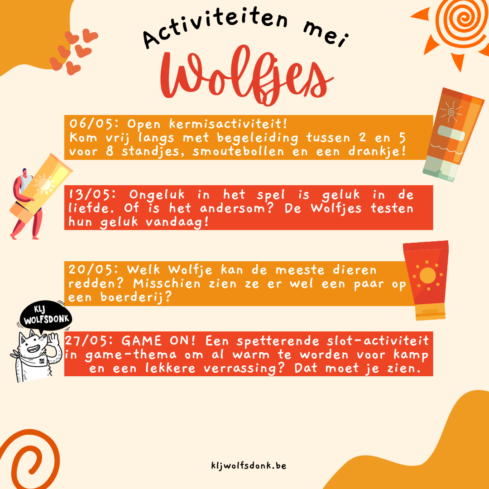
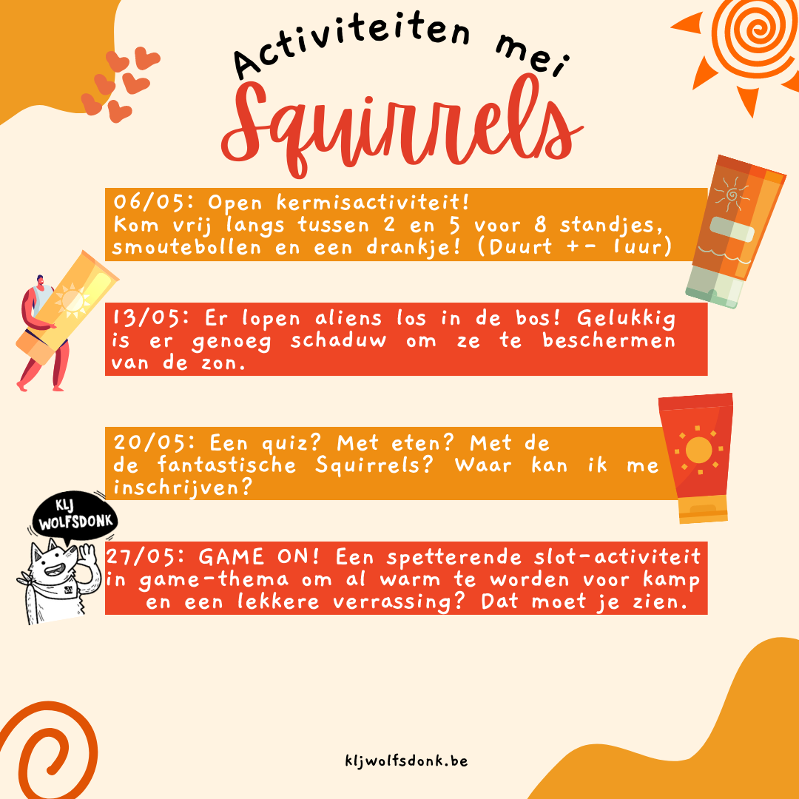
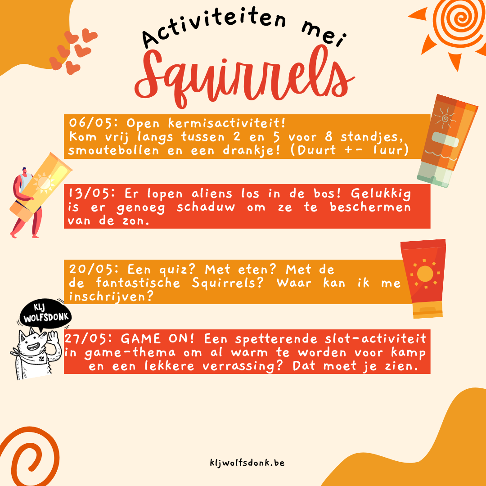

Welkom op onze site!
Hoi!
Hier vind je alles over onze KLJ!
Mocht je nog vragen hebben dan kan je ons altijd iets sturen op onze
facebookpagina.
Kamp 2024
Het kamp zal normaal tussen 12/07-21/07 vallen.
Kamp 2023
Hebben jullie er al zin in? Wij ook! Om al in de sfeer te komen kan je de aftermovies hier al bekijken!
Kleintjeskamp (Wolven - Skunks)
Binnen enkele maanden vertrekken we met onze jongste groepen naar Kasterlee!
We verblijven daar van 3/07/2023 tot 09/07/2023.
Wat is het adres?
Het adres is:
De Hoge Rielen
Molenstraat 62
2460 Kasterlee
Buitenlands kamp (Waspis & Aspis)
Na het kamp voor de kleintjes is het tijd om met de oudste groepen naar het buitenland te reizen!
Dit doen we elke drie jaar en net zoals vorige edities doen we dit via JEKA.
We zijn op reis van 18/07/2023 tot 28/07/2023.
Waar gaan we heen?
Samen met onze buschauffeur rijden we naar... Kroatië!
Tegemoetkoming kampgeld Ziekenfonds
Heel wat ziekenfondsen betalen een deel van het kampgeld terug. Hoe en hoeveel hangt af van bij welk ziekenfons je zit.
Vul de gegevens van het lid in, en geef het document op het einde van het kamp (of erna) af aan iemand van de leiding om het verder in
te vullen.
Voor Christelijke Mutualiteit (CM):
https://www.cm.be/diensten-en-voordelen/vakantie-en-vrije-tijd/vrije-tijd/jeugdvereniging.jsp
Voor Onafhankelijk Ziekenfonds (OZ):
https://www.oz.be/vakantie/voordelen/jeugdbewegingskampen
Voor Vlaams en Neutraal Ziekenfonds (VNZ):
https://www.vnz.be/voordelen-terugbetalingen/kampvergoeding/
Voor Neutraal Ziekenfonds Vlaanderen:
https://www.nzvl.be/we-helpen-je-graag-met/voordelen-voor-kinderen
Voor Socialistische Mutualiteiten:
De Voorzorg Antwerpen:
http://www.devoorzorg.be/antwerpen/voordelen-advies/terugbetalingen-ledenvoordelen/terugbetalingen-voordelen/vrije-tijd/jongerenvoordeel/Pages/Jeugdbeweging.aspx
De Voorzorg Limburg:
http://www.devoorzorg.be/limburg/voordelen-advies/terugbetalingen-ledenvoordelen/terugbetalingen-voordelen/vrije-tijd/sport/Pages/default.aspx
Bond Moyson Oost-Vlaanderen:
http://www.bondmoyson.be/ovl/voordelen-advies/terugbetalingen-ledenvoordelen/terugbetalingen-voordelen/vrije-tijd/jongerenvoordeel/Pages/Speelplein-en-vakanties.aspx
Bond Moyson West-Vlaanderen:
http://www.bondmoyson.be/wvl/voordelen-advies/terugbetalingen-ledenvoordelen/terugbetalingen-voordelen/vrije-tijd/Bos-zee-sneeuwklas-sportkamp-speelpleinwerking/Pages/default.aspx
geen info
Oost-Vlaanderen:
http://www.lm.be/Oost-Vlaanderen/Rubrieken/Voordelen-en-diensten/Kinderen-en-jongeren/jeugdbeweging/Pages/DefaultArticle.aspx
en
http://www.lm.be/Oost-Vlaanderen/Rubrieken/Voordelen-en-diensten/Kinderen-en-jongeren/Jeugdvakanties/Pages/Jeugdvakanties.aspx
West-Vlaanderen:
http://www.lm.be/West-Vlaanderen/Rubrieken/Voordelen-en-diensten/Kinderen-en-jongeren/Jeugdvakanties/Pages/Jeugdvakanties.aspx
Vlaams gewest:
http://www.lm.be/VlaamsGewest/Rubrieken/Voordelen-en-diensten/Kinderen-en-jongeren/Jeugdvakanties/Pages/Jeugdvakanties.aspx
KLJ Wolfsdonk?
Zijn jouw zaterdagen ook altijd zo lang en saai?
Verveel jij je elk weekend weer, zit je de hele dag te suffen achter jouw computer?
Wil jij ook iets meer halen uit die zaterdag?
Rep je dan als de bliksem naar KLJ WOLFSDONK!
KLJ wablief?!
KLJ Wolfsdonk natuurlijk!
KLJ Wolfsdonk is een te gekke bende van kinderen en jongeren tussen 6 en 26 jaar.
Elke zaterdag kan je ons vinden in Wolfsdonk en omstreken, waar we het hele dorp op stelten zetten met onze knotsgekke
activiteiten!
Voor wie?
KLJ is er voor iedereen, en dus ook voor jou!
Wij, van KLJ Wolfsdonk, zijn verdeeld in zes leeftijdsgroepen: Wolfkes, Girry's, Squirrels, Skunks,Waspi's en Aspi's. Elke keer
opnieuw serveren onze leiders en leidsters alle zes de leeftijdsgroepen een activiteit om nooit meer te vergeten.
Want bij KLJ Wolfsdonk krijg je vlees op je bord, puur en onversneden!
Nieuwsgierig?
Hongerig naar meer?
Klik dan op 'Praktisch' om alles te weten te komen over wie we zijn, wat we doen, wanneer we het doen, en hoe we het doen!
Praktische info
KLJ Wolfsdonk is een toffe bende die elke week een heel avontuur klaarstoomt voor uw kleine of al net iets minder kleine rakker.
Mail ons als je je nog wilt inschrijven!. Onze werking is verdeeld in zes leeftijdsgroepen:
- Wolfkes: van 6 tot 8 jaar, dus 1e en 2e leerjaar;
- Girry's: van 8 tot 10 jaar, dus 3e en 4e leerjaar;
- Squirrels: van 10 tot 12 jaar, dus 5e en 6e leerjaar;
- Skunks: van 12 jaar tot 14 jaar, dus 1e en 2e middelbaar;
- Waspi's: van 14 jaar tot 16 jaar, dus 3e en 4e middelbaar;
- Aspi's: vanaf 16 jaar, dus vanaf het 5e middelbaar.
Afhankelijk van het aantal leden kunnen de groepen in het begin van elk werkjaar wel wat aangepast worden. Het is bovendien ook steeds mogelijk om uw kind in een jongere leeftijdsgroep te plaatsen, als u of uw kind dat wenst. Voor meer informatie over de (groeps)leiding kan u hier terecht.
Prijzen
- Inschrijving 1e lid - 25 euro
- Inschrijving 2e, 3e,... lid - 15 euro
- Pull - 25 euro
- T-Shirt - 15 euro
- Nieuw sjaaltje - 5 euro
Rekeningnummer KLJ: BE57 7343 5310 2035
Waar & wanneer?
Alle groepen beginnen aan ons lokaatje om 14:00 en eindigen om 17u.
Onze afdeling bevindt zich in het gewest Demerland.
Ons lokaaltje is gelegen tegenover de Wolfdonkse bibliotheek en heeft het volgende adres:
Weybroekstraat 2A
3201 Wolfsdonk
Grotere kaart weergeven
Extra info
KLJ Wolfsdonk is een dolenthousiaste jeugdbeweging die elke zaterdag weer een spetterende activiteit in elkaar bokst. Maar, KLJ is nog veel meer dan een jeugdbeweging alleen! Laten we even een verfrissende duik nemen in het hele KLJ-gebeuren.
De KLJ
KLJ staat voor Katholieke
Landelijke Jeugd en bestaat al sinds 1927. Dat wil zeggen dat we dit jaar ons 94ste kaarsje mogen uitblazen!
In onze 280 afdelingen komen er gemiddeld zo'n 30 000 jongeren bijeen. Dit maakt KLJ één van de grote jeugdbewegingen, en de
grootste jongerenbeweging in Vlaanderen.
KLJ richt zich ook op drie grote doelen:
- jonge mensen samenbrengen;
- werken aan persoonlijke vorming én de groepsvorming van de leden;
- meewerken aan de opbouw van de samenleving.
Hierbij komt ook het werkthema ‘KLJ voor iedereen’. KLJ voor iedereen houdt in dat KLJ wil openstaan voor alle kinderen en jongeren. Of je nu arm bent of rijk, groot of klein, of lijdt aan een handicap: bij KLJ Wolfsdonk is iedereen welkom!
Elke week opnieuw werkt de vertrouwde leiding aan deze doelen, met de hulp van een hele reeks inhoudelijke en methodische speerpunten. Zo brengt KLJ Wolfsdonk niet alleen berg plezier voor de kinderen, maar leren de leden ook wat bij. Zo leren ze meedraaien in hun eigen kleine maatschappij: sociale vaardigheden zijn in de huidige samenleving immers belangrijker dan ooit!
Historiek
Toen in 1927 de BJB (Boerenjeugdbond) opgericht werd, was KLJ Wolfsdonk hierin een van de voortrekkers. Anders gezegd; KLJ
Wolfsdonk is dus
één van de oudste KLJ's in het land! De BJB was eigenlijk de huidige KLJ, maar de naam Katholieke
Landelijke Jeugd kwam pas in het jaar 1965 aangedraafd.
KLJ Wolfsdonk zelf is pas echt beginnen groeien halverwege de jaren '80.
Inschrijven
KLJ Wolfsdonk is een dolenthousiaste jeugdbeweging die elke zaterdag weer een spetterende activiteit in elkaar bokst. Maar, KLJ is nog veel meer dan een jeugdbeweging alleen! Laten we even een verfrissende duik nemen in het hele KLJ-gebeuren.
De KLJ
KLJ staat voor Katholieke
Landelijke Jeugd en bestaat al sinds 1927. Dat wil zeggen dat we dit jaar ons 94ste kaarsje mogen uitblazen!
In onze 280 afdelingen komen er gemiddeld zo'n 30 000 jongeren bijeen. Dit maakt KLJ één van de grote jeugdbewegingen, en de
grootste jongerenbeweging in Vlaanderen.
KLJ richt zich ook op drie grote doelen:
- jonge mensen samenbrengen;
- werken aan persoonlijke vorming én de groepsvorming van de leden;
- meewerken aan de opbouw van de samenleving.
Hierbij komt ook het werkthema ‘KLJ voor iedereen’. KLJ voor iedereen houdt in dat KLJ wil openstaan voor alle kinderen en jongeren. Of je nu arm bent of rijk, groot of klein, of lijdt aan een handicap: bij KLJ Wolfsdonk is iedereen welkom!
Elke week opnieuw werkt de vertrouwde leiding aan deze doelen, met de hulp van een hele reeks inhoudelijke en methodische speerpunten. Zo brengt KLJ Wolfsdonk niet alleen berg plezier voor de kinderen, maar leren de leden ook wat bij. Zo leren ze meedraaien in hun eigen kleine maatschappij: sociale vaardigheden zijn in de huidige samenleving immers belangrijker dan ooit!
Historiek
Toen in 1927 de BJB (Boerenjeugdbond) opgericht werd, was KLJ Wolfsdonk hierin een van de voortrekkers. Anders gezegd; KLJ
Wolfsdonk is dus
één van de oudste KLJ's in het land! De BJB was eigenlijk de huidige KLJ, maar de naam Katholieke
Landelijke Jeugd kwam pas in het jaar 1965 aangedraafd.
KLJ Wolfsdonk zelf is pas echt beginnen groeien halverwege de jaren '80.
Activiteiten

 



Contact
Voor vragen en opmerkingen, contacteer ons via kljwolfsdonk@hotmail.com
Mocht je dringende vragen hebben, dan kan je de hoofdleiders bellen:
Abram: 0474 24 61 10
Administratieve zaken: Noortje: 0498 23 99 63
Grotere kaart weergeven